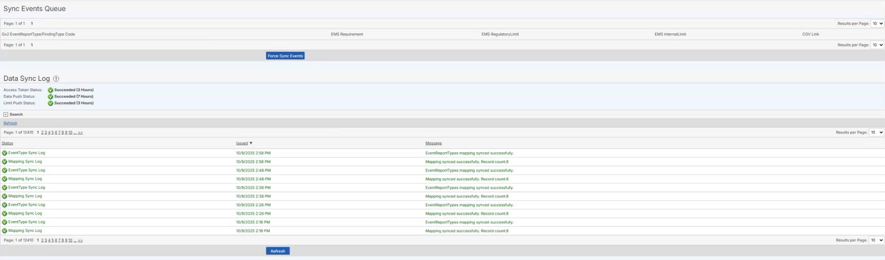

The data sync log displays all events automatically generated by the system. These events are those set to trigger when a regulatory limit is exceeded. For more information on setting regulator limits, see Trigger Events in from limits.
The Data Sync Log is only available when the Advanced Calculations (EMS) system is integrated with Core (GX2) and you have a user account that is linked to both systems.
To view data sync log, select Data Sync Log from the Messages page.

When a limit triggers, it will appear in the Events Queue section. Once processed, the synced event will display in the Data Sync Log section. If there was an error, a description of the error will be provided. You can sort and filter the Data Sync Log by any of the columns.